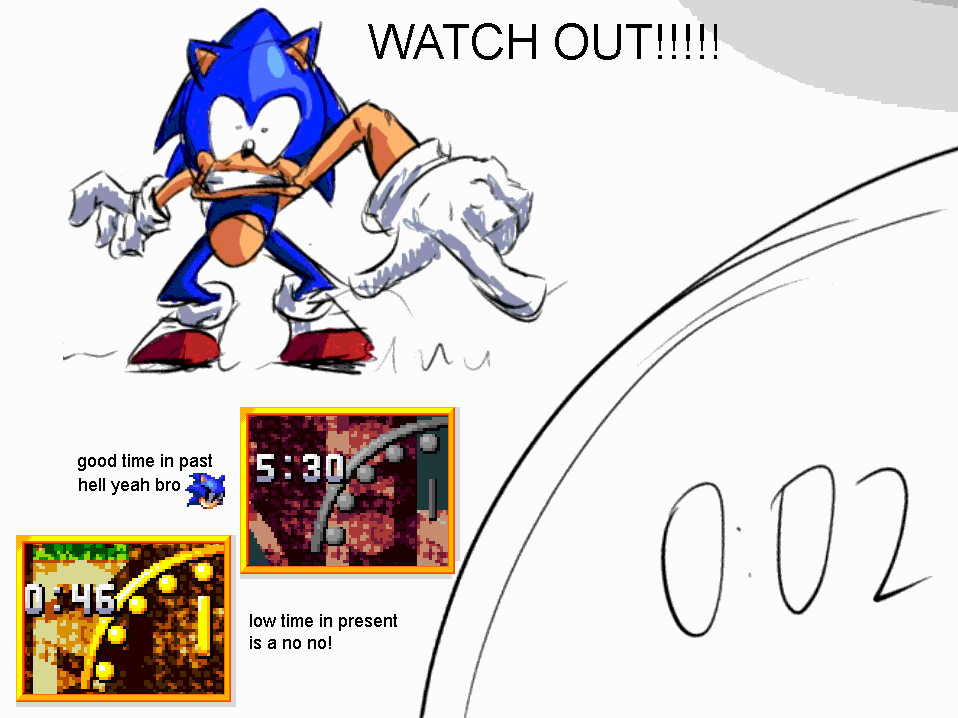

MANUAL
TIME TRAVEL
Sonic can move between the Present and the Past during a stage. Each period has its own layout details, hazards, and opportunities. The Doomsday Clock pauses in the Past, giving Sonic time to explore and attack machinery that cannot be damaged in the Present.
INSTA-SHIELD
The Insta-Shield is a core part of Sonic's moveset. It extends his attack range, grants brief invincibility, and can deflect projectiles when timed correctly.
It also interacts with the environment. Sonic can trigger springs from unusual angles, pull nearby rings toward himself, bounce from the surface of water, and activate certain stage objects in ways that open faster or safer routes.
LASER CONDUITS
Eggman's conduits feed energy into the Dyson sphere. In the Present they are fully reinforced and cannot be damaged.
In the Past, the same conduits are vulnerable. Each one takes three hits to destroy. Breaking them adds time to the Doomsday Clock and weakens the system powering Eggman's plan.

DOOMSDAY CLOCK
The main campaign is built around a universal countdown that begins with five minutes remaining. If the clock reaches zero, Sonic runs out of time and Eggman's plan succeeds.
The timer pauses in the Past, during boss sequences, and during act clear screens. Checkpoints save the current time, so dying restores the amount that was stored when the last checkpoint was activated.
INSTA-BREAK
The Insta-Break is a short aerial dash that also gives Sonic a small burst of extra height. Its distance scales with his current speed, so maintaining momentum makes the move much more effective.